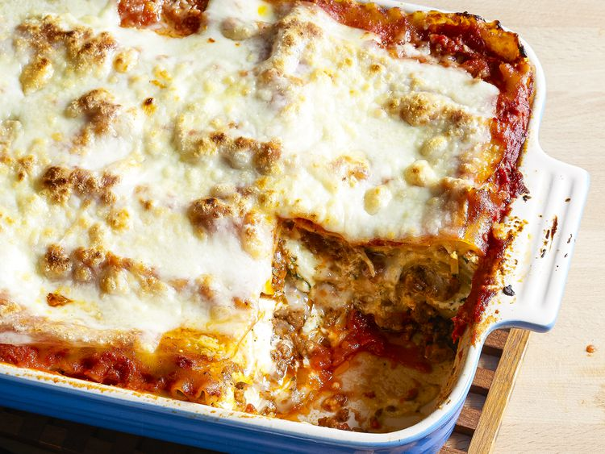

Lasagna

This lasagna recipe takes a little work, but it is so satisfying and
filling that it's worth it!
Ingredients
- Italian Sausage & Lean Ground Beef
- Onion & Garlic
- Tomato Products
- Sugar
- Spices & Seasonings
- Lasagna Noodles
- Cheese
- Eggs
Steps
- Gather all your ingredients.
-
Cook sausage, ground beef, onion, and garlic in a Dutch oven over
medium heat until well browned.
-
Stir in crushed tomatoes, tomato sauce, tomato paste, and water.
Season with sugar, 2 tablespoons parsley, basil, 1 teaspoon salt,
Italian seasoning, fennel seeds, and pepper. Simmer, covered, for
about 1 ½ hours, stirring occasionally.
-
Bring a large pot of lightly salted water to a boil. Cook lasagna
noodles in boiling water for 8 to 10 minutes. Drain noodles, and rinse
with cold water.
-
In a mixing bowl, combine ricotta cheese with egg, remaining 2
tablespoons parsley, and 1/2 teaspoon salt.
-
Preheat the oven to 375 degrees F (190 degrees C).
-
To assemble, spread 1 ½ cups of meat sauce in the bottom of a
9x13-inch baking dish. Arrange 6 noodles lengthwise over meat sauce,
overlapping slightly. Spread with 1/2 of the ricotta cheese mixture.
Top with 1/3 of the mozzarella cheese slices. Spoon 1 ½ cups meat
sauce over mozzarella, and sprinkle with 1/4 cup Parmesan cheese.
-
Repeat layers, and top with remaining mozzarella and Parmesan cheese.
Cover with foil: to prevent sticking, either spray foil with cooking
spray or make sure the foil does not touch the cheese.
-
Bake in the preheated oven for 25 minutes. Remove the foil and bake
for an additional 25 minutes.
-
Let the lasagna rest at room temperature for about 15 minutes before
cutting; this helps it set and firm up.
Home